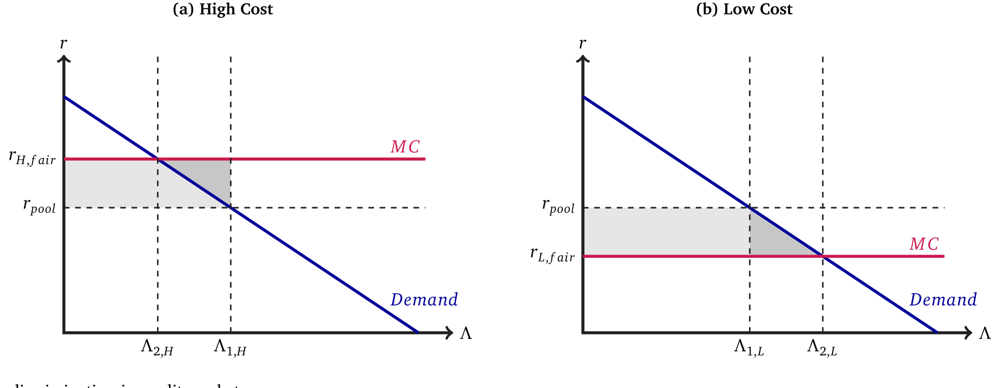
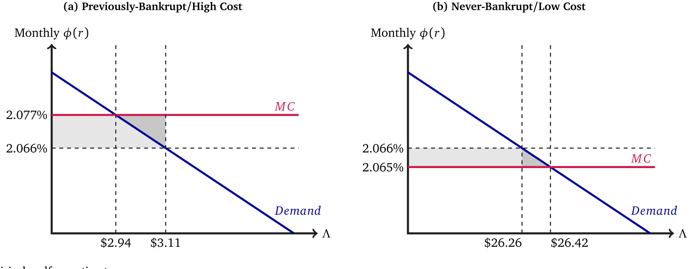
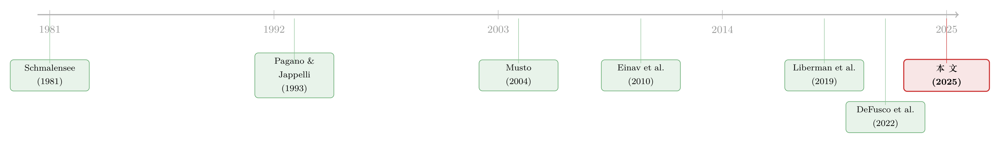

数据让定价更准，谁的钱包先变薄？——把「信息」翻译成福利的一道算术
本文读的是 Jansen, Nagel, Yannelis & Zhang (2025, Journal of Financial Economics)：他们把「贷款人拿到更多借款人数据」看成一种三级价格歧视，证明在若干假设下，数据带来的福利变化与再分配变化，只用价格和数量两类可观测数据就能估出来。把这套方法用到「破产记录从征信报告里抹去」这件事上，他们发现——如果破产标记永远不被删除，曾破产者每年的剩余会被大幅转走（约 $19 million），而整个社会的效率只温和地改善（约 $598,000）。换句话说，每在两类人之间转移 1 美元，社会总剩余只增加约 $0.03。
1 一个看似两全其美的故事，和它的裂缝
过去半个世纪，贷款人能拿到的数据经历了一场爆炸。从 1958 年 FICO 的出现，到后来的机器学习、另类数据、VantageScore，贷款人越来越能「看穿」一个借款人到底有多大概率违约。一个直觉上很美好的逻辑随之浮现：数据越多，利率就越能贴着借款人的真实风险定价，信贷配置就越有效率，社会福利自然水涨船高。
这听上去几乎无可指摘。可是，如果你把镜头拉近，会发现一道裂缝：数据在让定价更准的同时，也在改变利率，而利率一变，剩余就会在不同人之间重新分配。高风险的人本来在「大锅饭」式的统一利率下占了便宜，一旦被数据识别出来，他们要付更高的价；低风险的人则反过来享受到了降价。于是同一份数据，一边在做大蛋糕（效率），一边在切分蛋糕（再分配）。
监管者其实一直被卡在这道裂缝上。2022 年美国把 500 美元以下的医疗欠款催收记录从征信报告里移除；欧盟的 GDPR、美国的《公平信用报告法》(Fair Credit Reporting Act, FCRA) 都在试图给「哪些数据能用来定价」划线。与此同时，银行在 IT 和技术上的支出 2022 年涨到了 $74 billion，比 2017 年高出 37%。一边是越来越强的数据能力，一边是越来越紧的监管目光——可争论双方手里，其实都缺一把能称出「这份数据到底值多少福利、又转移了多少剩余」的秤。
这篇论文要造的，就是这把秤。
2 把数据翻译成一张「梯形图」
接着，一个自然的问题是：怎么把抽象的「数据」变成可以算的东西？
作者的关键一招，是把「贷款人获得数据」重新诠释为一种三级价格歧视 (third-degree price discrimination)。设想市场上有两类消费者——高成本的 H 和低成本的 L，前者以更高的违约率 δ_H 违约，后者以更低的 δ_L 违约。在没有数据的世界里，竞争性的贷款人分不清这两类人，只能对所有人收一个统一的「大锅饭价格」r_pool；一旦有了数据，贷款人就能把两类人拆开，分别定出各自的盈亏平衡利率 r_{H,fair} 和 r_{L,fair}。
于是「数据的福利效应」这个问题，就被翻译成了一个经济学家再熟悉不过的问题：从统一定价走向分组定价，社会剩余怎么变？这正是 Schmalensee (1981)、Varian (1985) 那条老脉络里的经典命题——三级价格歧视对福利的影响是模糊的，可好可坏。

Figure 1: Price discrimination in credit markets
如图 1 所示，故事可以画成两张「梯形/三角形」图。蓝线是两类借款人各自的需求曲线，红线是服务他们的成本。统一定价时，高成本组被「补贴」（价格低于其真实成本），低成本组被「过度收费」。一旦分组定价，价格各归各位：两组各自都消除了一块无谓损失 (deadweight loss, DWL) 三角形——这是效率的改善（图中深灰三角）；但与此同时，高成本组要多付钱（剩余被切走，图中浅灰区域），低成本组省了钱。这就是同一份数据「做大蛋糕」与「重切蛋糕」的两面，被画在了同一张图上。
但真正关键的一步，不在这张图本身，而在作者随后做的一件事：他们要证明，这张图里所有的面积，都可以只用价格和数量算出来，而不需要去估那些藏在背后的、看不见的需求与成本结构。
3 模型：为什么「价格 × 数量」就够了
这篇论文有一个干净的微观模型，值得一步步走一遍——因为它的「充分统计量 (sufficient statistics)」结论，全是从这个模型里长出来的。
3.1 从消费者效用到一条需求曲线
考虑一个消费者 i，在 t=0 期借钱买一件大件耐用品（论文里就是买车），之后在 t=1…T 期分期偿还。她的效用写成：
$$ u(c_{i,0}) + \sum_{t=1}^{T}\beta^t(1-\delta)^t u(c_{i,t}) + \sum_{t=1}^{T}(1-\delta)^{t-1}\delta\sum_{\tilde t=t}^{T}\beta^{\tilde t}\tilde u(c_D) $$
三项分别是：当期买入的效用、按概率 (1-δ)^t 活到 t 期不违约时的还款期效用、以及以概率 (1-δ)^{t-1}δ 在第 t 期违约后的「违约后消费」效用。
贷款是等额本息的自摊还贷款。若本金为 L、利率为 r，则每期还款为 L·φ(r)，其中摊还系数为：
$$ \phi(r)\equiv\frac{r(1+r)^T}{(1+r)^T-1} $$
这个 φ(r) 随 r 递增，可以理解为「每借 1 美元、每期要还多少美元」。作者特意用 φ(r) 而不是 r 来度量价格——因为美元比利率点数更直观，福利最后也要落到美元上。
借款人是完全流动性约束的，所以她当期消费 c_{i,0}=w_{i,0}+L，未来每期消费 c_{i,t}=w_{i,t}-Lφ(r)。这里有一个至关重要的简化：作者把还款期的效用做线性近似，
$$ u(c_{i,t})\approx u(w_{i,t})-u'(w_{i,t})\,L_i\phi(r) $$
这一步的意义在于：它让消费者的偏好对「未来还款」变成拟线性 (quasilinear) 的，从而消除了收入效应。这正是延续了 Marshall (1920)、Vives (1987) 那个古典论证——当一件商品在总消费里只占「一小块」时，可以忽略对剩余「复合品」的效用凹性。其直接后果是：希克斯需求和马歇尔需求重合，补偿变差 (CV)、等价变差 (EV) 与马歇尔消费者剩余 (CS) 三者完全相等。于是「需求曲线下的面积」就名正言顺地等于消费者从借贷中得到的美元价值。
3.2 剩余 = 需求曲线下的积分
对单个消费者求解最优借款 L*_i(r) 并对 r 微分，可得：
$$ \frac{d}{dr}V(r)=-\Big[\sum_{t=1}^{T}\beta^t(1-\delta)^t u'(w_{i,t})\Big]\,L^*_i(r)\,\frac{d\phi}{dr} $$
方括号里的「效用权重」项因为线性假设而变成了常数，所以 dV 的变化完全由贷款需求 L*_i(r) 驱动。把这个常数除掉，消费者剩余就干净地写成对需求的积分：
$$ CS_i(r)=\int_r^{\bar r}L^*_i(r)\,\frac{d\phi}{dr}\,dr $$
把同组所有人加总、再乘上「预期不违约的期数」做美元归一化，就得到了这篇论文的核心量——美元化消费者剩余 (dollarized consumer surplus, DCS)。这是全文最该被标注讲清楚的一个方程：
其中调整因子为：
$$ \psi_H=(1-\delta_H)\,\frac{1-(1-\delta_H)^T}{\delta_H} $$
这个式子的妙处在于：DCS_H 就是贷款数量对价格变化的积分——正是图 1 里那个梯形的面积。当利率从 r 变到 r̃，消费者剩余的变化是
$$ DCS_H(\tilde r)-DCS_H(r)=-\psi_H\int_r^{\tilde r}\Lambda_H(\hat r)\,\frac{d\phi(\hat r)}{d\hat r}\,d\hat r $$
而厂商一侧，竞争性贷款人有恒定边际成本，在盈亏平衡利率 r_{H,fair} 上零利润；在任何别的利率 r_H 上，生产者剩余是
$$ PS_H(r_H)=\psi_H\,\Lambda_H(r_H)\big(\phi(r_H)-\phi(r_{H,fair})\big) $$
到这里，整个逻辑闭合了：只要我观测到价格（φ 和盈亏平衡价）与数量（Λ），梯形和三角形的面积就都能算出来，不必去结构性地估计需求弹性背后的深层参数。这正是作者对「数据文献」的核心贡献——一套价格理论式 (price-theoretic) 的充分统计量方法。
这套「需求曲线下面积 = 美元剩余」的思路，承袭自 Harberger (1964) 的 DWL 三角形、Einav et al. (2010) 在保险市场的价格理论方法，以及 DeFusco et al. (2022) 把它搬进信贷市场的工作。本文的新意是：把它对准「数据的增减」，并说明价格和数量信息就足以度量数据引起的剩余变化。
4 一个反直觉的结论：数据越「没用」，越是在搞再分配
然后，模型吐出了一个相当反直觉的命题。
作者证明：效率改善（那两个 DWL 三角形）的大小，随数据引起的价格变化呈二次方 (quadratic) 增长；而再分配（剩余转移）的大小，只随价格变化呈线性 (linear) 增长。
这意味着什么？当数据对违约率的信息含量不高、因而数据引起的价格变化很小时，二次方项远小于线性项——于是转移效应会压倒效率效应。换句话说，那些「看起来没带来多少配置改善」的数据，其实可能正在悄悄地、大规模地把剩余从一类人手里搬到另一类人手里。数据越是「平平无奇」，它干的事情就越像是再分配而非做大蛋糕。
这个洞见，恰好为后面的实证埋下了伏笔。
5 实证：把破产标记「永远留下」会怎样？
接着，作者把这套秤架到了一个真实的政策上：破产标记的删除 (bankruptcy flag removal)。
按 FCRA 的规定，破产记录会在第 13 章 (Chapter 13) 破产申报 7 年后、第 7 章 (Chapter 7) 破产申报 10 年后，从征信报告里被抹掉。作者用的是 TransUnion 的行政数据，看的是美国汽车贷款市场，利用个人内部 (within-consumer) 的时间变异——比较同一个人在标记被删除前后那一刻的贷款条件。
这是一个干净的双重差分 (difference-in-differences, DiD) 设计。结果是：标记一旦被删除，个人会经历
- 信用分上升
17分； - 利率下降
22.6个基点； - 借款额增加
$18。
有了这组「曾破产者」在删除前后的价格与数量变化，作者再做反事实推断：对从未破产者 (never-bankrupt)，他们利用贷款人的零利润条件「倒推」出对应的、更小的降价与更小的借款增加（这一步用到了「两组需求弹性相等」的假设）。把两组的价格、数量变化都凑齐之后，那张梯形图里的每一块面积，就都能算了。

Figure 3: Empirical welfare estimates
如图 3 所示，作者估出的反事实福利效应是这样的：如果破产标记永远不被删除，社会福利每年只温和增加约 $598,000；但每年约有 $19 million 的借款人剩余，会从曾破产者转移到从未破产者。两者一比——这个反事实政策每在两类人之间转移 1 美元，只换来约 $0.03 的社会总剩余增加。
于是反转出现了：现行的「删除标记」政策确实制造了一些配置无效率（让该被识别为高风险的人享受了降价），但这些效率损失，相对于它所带来的再分配，其实小得多。监管者真正在做的，与其说是在「纠正定价扭曲」，不如说是在「用一点点效率，换一大笔对曾破产者的交叉补贴」。这恰好印证了第 4 节那个二次/线性的命题——破产标记对违约率的信息含量并没有大到让效率项主导。
6 文献脉络
把这篇论文放回它所在的坐标系，会看得更清楚。
最上游，是价格歧视的福利模糊性这条老脉络：Schmalensee (1981)、Varian (1985, 1989) 早就指出，三级价格歧视对社会福利的影响可正可负，没有定论。与此并行的，是信贷市场里「信息共享」的理论传统：Pagano & Jappelli (1993) 分析贷款人分享信息的激励，以及信息共享如何缓解逆向选择。

接着，实证这一脉从 Musto (2004) 开始——他是第一个研究破产标记删除对信用分与违约影响的人。再往后，Einav et al. (2010) 在保险市场里把「价格理论的剩余测度」打磨成型，DeFusco et al. (2022) 把它搬进消费信贷、用来度量逆向选择的福利成本。而最贴近本文的，是 Liberman et al. (2019)：他们研究智利删除违约数据的效果，用类似的价格理论方法估计剩余变化。本文与之互补——但有一个数据上的优势：作者直接观测到了价格，而 Liberman et al. 只能从违约率反推价格。本文也因此能解释 Liberman et al. 那个「删除数据似乎反而降低社会剩余」的发现：因为转移效应往往压倒了效率效应。
至于「数据本身的福利」这条更新的脉络——Begenau et al. (2018)、Nelson (2025) 等——本文的位置是：不去搭建复杂的结构模型，而是提供一套轻巧的、只靠价格与数量的充分统计量方法，作为那些更丰富结构方法的互补。
（关于信贷市场里逆向选择如何让中间商越赚越多，可参见《钱越来越好借，中间商却越赚越多——「顺序信贷市场」里那条看不见的逆向选择》；关于数据/支付信息如何重塑普惠信贷，可参见《一辆共享单车，如何让1亿人「被看见」？》。）
7 评论与延伸（Q&A + 研究方向）
(a) 几个可能的疑问
Q：这和 DeFusco et al. (2022) 那套逆向选择的福利测度，到底差在哪？
DeFusco et al. (2022) 关注的是逆向选择——成本依赖于价格——但不谈数据政策。本文反过来：在基准模型里假设掉逆向选择，专攻数据的增减。这个取舍换来了一个更锋利的定性结论：在本文设定下，数据总是改善福利（因为它消除了两组的 DWL 三角形）。代价是基准模型里不含动态类型、声誉、道德风险等力量，这些被放到了扩展和附录里讨论。
Q：「只用价格和数量就能估福利」是不是太好了？背后藏了什么假设？
藏了几个强假设。最关键的是：还款期效用线性近似（消除收入效应，让 CS=CV=EV）、贷款人恒定边际成本/零利润、以及反推从未破产组时假设两组需求弹性相等。这些假设让梯形面积可以只靠价格和数量算出来，但每一个都可能在现实中被违反——作者也坦承基准模型是「stylized」的。
Q：那个「每转移 1 美元只换 0.03 美元效率」的数字，为什么这么小？
因为效率（三角形）随价格变化呈二次方、再分配（梯形/矩形）随价格变化呈线性。破产标记被删除带来的利率变化只有
22.6个基点——价格变化很小，于是二次项被线性项远远压过。这不是巧合，而是模型预测的一般规律：当数据信息含量不高时，它干的主要是再分配。
Q：DiD 的平行趋势可信吗？标记删除的那一刻，会不会同时发生别的事？
设计用的是个人内部、删除前后的紧邻比较，时点由 FCRA 的 7/10 年规则外生决定，这点比较干净。但担忧仍在：删除前后借款人自身的财务状况可能也在改善（破产的「疤痕」随时间自然淡化），那么
17分的信用分跳升里，有多少是「标记删除」本身、有多少是「时间」，需要更细的事件窗口去甄别。
Q：结论能推广到房贷、信用卡，还是只对汽车贷款成立？
方法本身是通用的——任何「贷款人获取对违约有信息的定价数据」的场景都适用。但那个「效率损失小于再分配」的具体数量级，依赖于汽车贷款的弹性和违约结构。信用卡（循环信贷、Nelson 2025 的场景）或房贷的需求弹性、期限结构都不同，量级未必照搬。
Q：作者假设竞争性、零利润的贷款人。如果市场有垄断势力呢？
基准结论会被削弱。在扩展里作者讨论了不完全竞争——一旦贷款人有定价势力，分组定价的福利结论就回到 Chen & Schwartz (2015) 那种「成本差异下的差别定价」分析，福利效应重新变得模糊，不再是「数据总是改善福利」那么干净。
(b) 几个可能的研究问题与提案
1. 把这套秤架到公司债/信用市场的「评级数据」上。
【经济故事】信用评级、ESG 评分、另类数据正越来越多地被用来给公司债定价。一旦评级机构或投资者获得更细的发行人数据，债券利差会更贴近真实违约风险——这同样是一次「数据驱动的价格歧视」，会在不同信用质量的发行人之间重新分配融资成本。 【可行性】中。价格（利差）可观测，数量（发行额、持有量）也有 TRACE、Mergent FISD。难点在于「盈亏平衡价」和「需求弹性相等」假设在机构主导的债市里更难成立，需要更细的需求体系估计。
2. 外资持有人进入是否构成一次「数据冲击」？
【经济故事】外资机构进入一国信用市场时，往往带来不同的信息技术与定价模型（本国 vs. 全球视角）。这相当于给一部分发行人「增加了定价数据」，可能在本土与外资覆盖的发行人之间重新分配融资成本与流动性。 【可行性】中偏低。识别外资进入的外生时点不易，且需要把「数据效应」从「资本供给效应」中剥离出来。可考虑用监管放开外资准入的准自然实验做 DiD。
3. 数据信息含量的「二次 vs. 线性」命题，能不能直接拿数据检验？
【经济故事】本文的核心理论预测是：效率随价格变化呈二次方、再分配呈线性。这是一个可证伪的横截面预测——在数据信息含量不同的细分市场里，效率/再分配之比应当随价格变化的幅度系统性变化。 【可行性】高。只要能在多个细分信贷市场（不同车型、不同地区、不同评分模型覆盖度）里分别估出价格变化与两类面积，就能直接拟合这条二次/线性关系，是本文方法最自然、最 doable 的延伸。
4. 标记删除的再分配，最终落到了流动性上吗？
【经济故事】曾破产者拿到降价后多借了
$18、信用分涨了17分，这是否改善了他们后续在二级市场（如车贷资产证券化）里的流动性待遇？再分配可能不止停在一级定价，而是顺着证券化链条传导。 【可行性】中。需要把消费者层面的征信数据与 ABS 层面的资产池数据对接，匹配难度大，但 TransUnion + ABS 披露原则上可做。
8 我的判断
这篇论文最让我欣赏的，是它的「克制」。在一个很容易被做成大型结构模型的题目上，作者选择用一组强假设换来一个异常清晰、且可被价格与数量直接识别的结论框架。那个「效率二次、再分配线性」的命题，以及由此推出的「数据越没用、越是在搞再分配」，是真正有思想增量的洞见——它把「该不该限制数据」这场政策辩论，从含糊的价值判断，拉回到了一个可量化的天平上：你愿意用多少效率，去换多少对弱势群体的交叉补贴？
对识别，我有两点担忧。其一，反推从未破产组时「两组需求弹性相等」这个假设承担了太多重量——整个反事实的从未破产组价格、数量都建立在它之上，而论文里能直接验证它的余地有限。其二，线性效用近似消除了收入效应，这在「买车」这种相对小额的耐用品上也许站得住，但福利数字对这个近似有多敏感，值得一个更系统的稳健性檢验。
后续我最想看到的，是把这套方法搬出「破产标记」这一个应用，去更多数据政策（医疗欠款删除、另类数据准入、AI 定价模型）上做横截面比较——如果「效率/再分配之比」在不同信息含量的场景里果然按理论预测的方式变化，那这套秤就不只是一个漂亮的会计恒等式，而是一条能被反复证伪、反复确认的经验规律。那才是它真正的分量所在。
参考文献
- Begenau, J., Farboodi, M., Veldkamp, L. (2018). Big data in finance and the growth of large firms. Journal of Monetary Economics 97, 71–87.
- Chen, Y., Schwartz, M. (2015). Differential pricing when costs differ: A welfare analysis. RAND Journal of Economics 46(2), 442–460.
- DeFusco, A.A., Tang, H., Yannelis, C. (2022). Measuring the welfare cost of asymmetric information in consumer credit markets. Journal of Financial Economics 146(3), 821–840.
- Einav, L., Finkelstein, A., Cullen, M.R. (2010). Estimating welfare in insurance markets using variation in prices. Quarterly Journal of Economics 125(3), 877–921.
- Jansen, M., Nagel, F., Yannelis, C., Zhang, A.L. (2025). Data and welfare in credit markets. Journal of Financial Economics 174, 104171.
- Liberman, A., Neilson, C., Opazo, L., Zimmerman, S. (2019). The equilibrium effects of information deletion: Evidence from consumer credit markets. Working Paper.
- Marshall, A. (1920). Principles of Economics, 8th ed. Macmillan and Co.
- Musto, D.K. (2004). What happens when information leaves a market? Evidence from postbankruptcy consumers. Journal of Business 77(4), 725–748.
- Nelson, S.T. (2025). Private information and price regulation in the US credit card market. Econometrica 93(4), 1371–1410.
- Pagano, M., Jappelli, T. (1993). Information sharing in credit markets. Journal of Finance 48(5), 1693–1718.
- Schmalensee, R. (1981). Output and welfare implications of monopolistic third-degree price discrimination. American Economic Review 71(1), 242–247.
- Varian, H.R. (1985). Price discrimination and social welfare. American Economic Review 75(4), 870–875.
- Vives, X. (1987). Small income effects: A Marshallian theory of consumer surplus and downward sloping demand. Review of Economic Studies 54(1), 87–103.